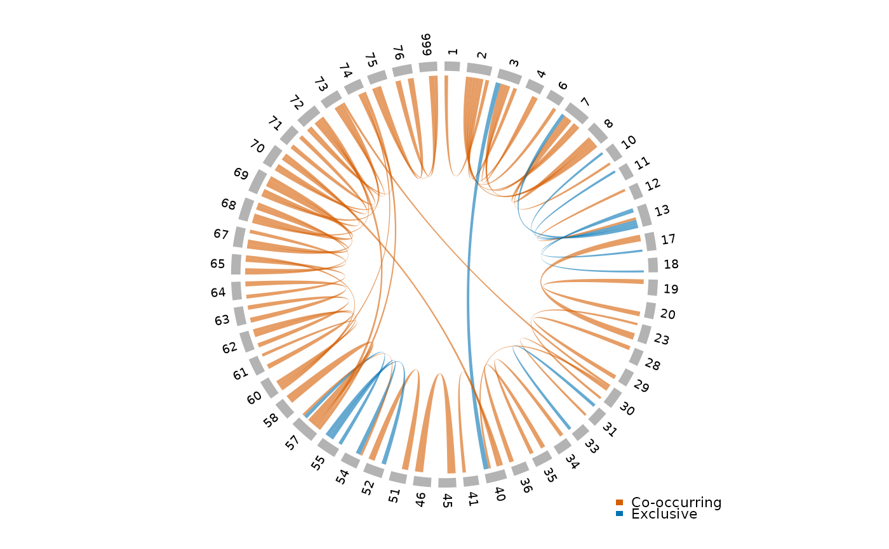

Display a circlize chord diagram showing significant pairwise modification co-occurrence (odds ratios) for a single sample. Chords are colored by direction: positive odds ratios (co-occurring modifications) vs. negative (mutually exclusive). Chord width reflects the magnitude of the log odds ratio.
Usage
plot_chord_or(
odds_data,
or_col = "log_odds_ratio",
or_cutoff = 1,
p_col = "p_value",
p_cutoff = 0.01,
min_obs = 100,
positive_color = "#D55E00",
negative_color = "#0072B2",
sprinzl_coords = NULL,
mods = NULL,
title = NULL,
transparency = 0.4
)Arguments
- odds_data
A tibble of odds ratio data with columns
pos1,pos2,log_odds_ratio(or column specified byor_col),p_value(or column specified byp_col), andtotal_obs.- or_col
Column name (string) for the odds ratio value. Default
"log_odds_ratio".- or_cutoff
Minimum absolute value of
or_colfor a chord to be drawn. Default1.0.- p_col
Column name (string) for the p-value. Default
"p_value".- p_cutoff
Maximum p-value for a chord to be drawn. Default
0.01.- min_obs
Minimum number of observations (
total_obs) for a pair to be included. Default100.- positive_color
Color for positive odds ratios (co-occurrence). Default
"#D55E00"(vermillion).- negative_color
Color for negative odds ratios (exclusion). Default
"#0072B2"(blue).- sprinzl_coords
An optional tibble from
read_sprinzl_coords()used to order sectors by Sprinzl position and color by structural region.- mods
An optional tibble of modification annotations (e.g., from
fetch_modomics_mods()) with columnsposandmod1. When provided along withsprinzl_coords, modification positions are highlighted as an annotation ring.- title
Optional plot title.
- transparency
Transparency for chord colors (0 = opaque, 1 = fully transparent). Default
0.4.
Examples
# \donttest{
or_file <- paste0(
"ecoli/summary/tables/wt-15-ctl-01/",
"wt-15-ctl-01.odds_ratios_filtered.tsv.gz"
)
path <- clover_example(or_file)
or_data <- read_odds_ratios(path)
or_data <- dplyr::filter(or_data, ref == "host-tRNA-Glu-TTC-1-1")
plot_chord_or(or_data)

# }